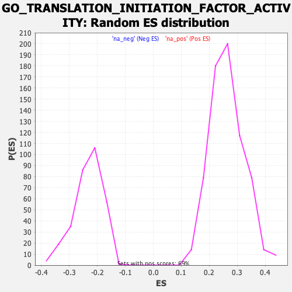

| | | Dataset | CK_basal |
| Phenotype | NoPhenotypeAvailable |
| Upregulated in class | na_neg |
| GeneSet | GO_TRANSLATION_INITIATION_FACTOR_ACTIVITY |
| Enrichment Score (ES) | -0.5099555 |
| Normalized Enrichment Score (NES) | -2.1940637 |
| Nominal p-value | 0.0 |
| FDR q-value | 0.020126866 |
| FWER p-Value | 0.146 |
Table: GSEA Results Summary
 Fig 1: Enrichment plot: GO_TRANSLATION_INITIATION_FACTOR_ACTIVITY
Fig 1: Enrichment plot: GO_TRANSLATION_INITIATION_FACTOR_ACTIVITY
Profile of the Running ES Score & Positions of GeneSet Members on the Rank Ordered List
| SYMBOL | RANK IN GENE LIST | RANK METRIC SCORE | RUNNING ES | CORE ENRICHMENT | | 1 | COPS5 | 2448 | 1.493 | -0.0884 | No |
| 2 | EIF4E3 | 2766 | 1.420 | -0.0692 | No |
| 3 | EIF3A | 2804 | 1.413 | -0.0359 | No |
| 4 | EIF1AX | 2905 | 1.391 | -0.0063 | No |
| 5 | EIF3E | 6055 | 0.799 | -0.1480 | No |
| 6 | EIF3H | 6970 | 0.654 | -0.1786 | No |
| 7 | EIF4E2 | 7324 | 0.600 | -0.1818 | No |
| 8 | EIF2S1 | 9096 | 0.321 | -0.2647 | No |
| 9 | EIF3F | 9129 | 0.315 | -0.2585 | No |
| 10 | EIF4H | 9236 | 0.298 | -0.2565 | No |
| 11 | EIF4E | 9620 | 0.239 | -0.2702 | No |
| 12 | EIF3I | 10051 | 0.174 | -0.2879 | No |
| 13 | EIF3D | 10259 | 0.142 | -0.2950 | No |
| 14 | EIF2B1 | 10975 | 0.026 | -0.3311 | No |
| 15 | EIF1AY | 11043 | 0.016 | -0.3341 | No |
| 16 | EIF4G2 | 11134 | 0.002 | -0.3387 | No |
| 17 | DENR | 11412 | -0.042 | -0.3519 | No |
| 18 | EIF2D | 11480 | -0.052 | -0.3540 | No |
| 19 | EIF3G | 11745 | -0.092 | -0.3653 | No |
| 20 | EIF2A | 11765 | -0.095 | -0.3639 | No |
| 21 | EIF6 | 11998 | -0.135 | -0.3724 | No |
| 22 | EIF2S3 | 12082 | -0.149 | -0.3730 | No |
| 23 | EIF1AD | 12342 | -0.192 | -0.3815 | No |
| 24 | EIF4A1 | 12375 | -0.201 | -0.3781 | No |
| 25 | EIF4E1B | 12433 | -0.210 | -0.3758 | No |
| 26 | DHX29 | 12444 | -0.212 | -0.3710 | No |
| 27 | EIF4B | 12869 | -0.286 | -0.3857 | No |
| 28 | EIF1 | 12958 | -0.299 | -0.3827 | No |
| 29 | EIF2B3 | 15376 | -0.752 | -0.4880 | No |
| 30 | AGO2 | 15804 | -0.848 | -0.4888 | Yes |
| 31 | EIF4G3 | 15855 | -0.857 | -0.4700 | Yes |
| 32 | MCTS1 | 15862 | -0.859 | -0.4488 | Yes |
| 33 | EIF3L | 16000 | -0.884 | -0.4338 | Yes |
| 34 | MTIF2 | 16397 | -0.968 | -0.4300 | Yes |
| 35 | EIF3J | 16434 | -0.976 | -0.4075 | Yes |
| 36 | EIF1B | 16525 | -1.000 | -0.3871 | Yes |
| 37 | EIF3M | 17047 | -1.124 | -0.3858 | Yes |
| 38 | EIF5 | 17202 | -1.169 | -0.3646 | Yes |
| 39 | EIF4A2 | 17299 | -1.199 | -0.3396 | Yes |
| 40 | EIF5B | 17374 | -1.222 | -0.3129 | Yes |
| 41 | MTIF3 | 17590 | -1.291 | -0.2917 | Yes |
| 42 | EIF3C | 17692 | -1.321 | -0.2639 | Yes |
| 43 | EIF2B4 | 17913 | -1.395 | -0.2404 | Yes |
| 44 | EIF3B | 18258 | -1.538 | -0.2197 | Yes |
| 45 | EIF4G1 | 18602 | -1.700 | -0.1948 | Yes |
| 46 | EIF2B5 | 18988 | -1.949 | -0.1660 | Yes |
| 47 | EIF2S2 | 19338 | -2.371 | -0.1247 | Yes |
| 48 | EIF2B2 | 19453 | -2.680 | -0.0636 | Yes |
| 49 | EIF3K | 19456 | -2.694 | 0.0035 | Yes |
Table: GSEA details [plain text format]

Fig 2: GO_TRANSLATION_INITIATION_FACTOR_ACTIVITY: Random ES distribution
Gene set null distribution of ES for GO_TRANSLATION_INITIATION_FACTOR_ACTIVITY